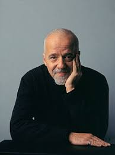

Paulo Coelho
Né le 24 août 1947 à Rio de Janeiro, est un romancier, journaliste et un interprète brésilien. Il a acquis une renommée internationale avec la publication de L'Alchimiste, vendu à 85 millions d'exemplaires.
En savoir plus
|

Paulo Coelho Né le 24 août 1947 à Rio de Janeiro, est un romancier, journaliste et un interprète brésilien. Il a acquis une renommée internationale avec la publication de L'Alchimiste, vendu à 85 millions d'exemplaires. En savoir plus |

Stephen King Né le 21 septembre 1947 à Portland dans le Maine, est un écrivain américain.
|
Gaël Brulé Ingénieur et sociologue. Il est actuellement chercheur à l'université de Genève en Suisse et de Rotterdam aux Pays Bas. Il est rédacteur en chef de la revue Sciences & Bonheur. En savoir plus |
Christophe Galfard Diplômé de l'École centrale Paris en 1999 et spécialisé en physique théorique2, il obtient ensuite un Ph.D. à l'université de Cambridge sous la direction de Stephen Hawking. Il a copublié avec ce dernier et Lucy Hawking Georges et les Secrets de l'univers en 2007. En savoir plus |

Robyn Schneider Diplômée de l'Université de Columbia, où elle a étudié l'écriture et de l'Université de Pennsylvanie Perelman School of Medicine, où elle a étudié l'éthique médicale. En savoir plus |
| Avis sur les auteurs | ||
|---|---|---|
| Auteur | Nombre d'oeuvres | Avis du public |
| Paulo Coehlo | 12 | 4,3 / 5 |
| Stephen King | 112 | 4,9 / 5 |
| Gaël Brulé | 2 | 3,2 / 5 |
| Christophe Galfard | 3 | 5 / 5 |
| Robyn Schneider | 7 | 3,9 / 5 |
| Basé sur les données de Fnac.com |